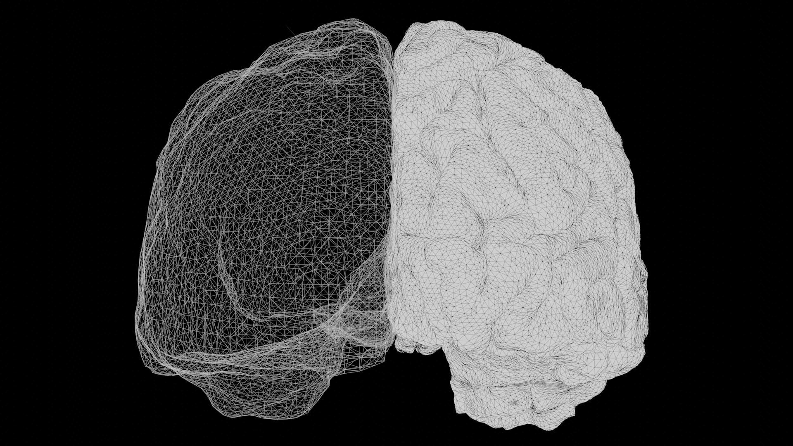

Alejandro Montenegro Taborda

¿Tiene el tiempo gramatical su propia huella en el cerebro?
Estudiar las bases neurobiológicas del lenguaje implica enfrentarse a una paradoja metodológica histórica. Durante décadas, la neurociencia cognitiva se apoyó en experimentos de laboratorio sumamente controlados: se introducía a una persona dentro de un resonador magnético y se le pedía leer o escuchar palabras aisladas y frases breves desconectadas entre sí. Aunque este aislamiento artificial permitió identificar componentes básicos del procesamiento verbal, dejó de lado un aspecto central: la validez ecológica. En la vida cotidiana nadie se comunica mediante ráfagas inconexas de oraciones; el lenguaje real es continuo, narrativo y estrechamente dependiente del contexto previo.
Para superar ese límite experimental, la investigación contemporánea ha migrado hacia el habla naturalista, analizando registros donde los participantes escuchan historias orales completas (como las narraciones autobiográficas de The Moth Radio Hour). Sin embargo, trabajar con relatos reales introduce una dificultad estadística importante: la colinealidad. En una historia hablada, las propiedades físicas del sonido, la frecuencia con la que usamos cada palabra, la estructura gramatical de la oración y el significado temático varían al mismo tiempo. Ninguno de estos niveles llega al cerebro por un canal separado.
Estímulo continuo:
"I looked back at the door and realized that everyone had vanished into the cold night.""Miré hacia la puerta y me di cuenta de que todos habían desaparecido en la noche fría."
Cuando un oyente procesa esa frase, su cerebro no espera a que termine un nivel para iniciar el siguiente. En fracciones de segundo, la corteza auditiva recibe las fluctuaciones acústicas; casi en simultáneo, las redes léxicas reconocen las palabras, los circuitos sintácticos relacionan quién hizo qué y las áreas de asociación integran el sentido general de la escena. Al mismo tiempo, las marcas gramaticales de los verbos (como la terminación de pasado -ed en looked o el auxiliar had) sitúan los hechos en una coordenada temporal precisa respecto al momento en que se habla.
Por esta razón, la pregunta de investigación no puede plantearse simplemente como «¿qué parte del cerebro se activa con el tiempo verbal?», como si existiera un compartimento exclusivo y aislado para las conjugaciones. Desde una perspectiva computacional, el problema consiste en responder una pregunta más estricta: ¿aporta la representación matemática del tiempo gramatical información predictiva adicional sobre la actividad cerebral, una vez que ya hemos descontado el sonido, la frecuencia de las palabras, su categoría general, la complejidad de la oración y el significado temático del relato?
Tabla 1: Glosario de convenciones y conceptos clave del estudio
| Término | Definición conceptual | Rol en el estudio |
|---|---|---|
| fMRI / BOLD | Resonancia magnética funcional que registra cambios locales en la oxigenación de la sangre cerebral. | Es la señal neurobiológica continua que los modelos intentan predecir en cada punto de la corteza. |
| TR (Tiempo de Repetición) | El compás temporal en el que el escáner adquiere un volumen cerebral completo (cada 2.0 segundos, equivalente a 0.5 Hz). | Determina la escala temporal final a la que deben sincronizarse todas las matrices de características. |
| derivatives/ | Carpeta estandarizada bajo el formato BIDS con datos sometidos a preprocesamiento y control de calidad. | Punto de partida validado: series BOLD limpias en formato HDF5 y transcripciones TextGrid alineadas al audio. |
| Modelos de codificación a nivel de vóxel (VEM) | Algoritmos de regresión ajustados de manera independiente en cada unidad cúbica tridimensional (vóxel) de la corteza. | Permiten evaluar qué representaciones del lenguaje predicen la actividad cerebral ante estímulos nuevos fuera de muestra. |
| HRF Canónica | Función matemática que modela el retraso biológico entre el disparo neuronal y el pico de flujo sanguíneo oxigenado. | Actúa como filtro temporal para convertir eventos lingüísticos rápidos (100 Hz) al ritmo lento de la señal BOLD (0.5 Hz). |
| Delta de los Modelos (ΔR²) | Diferencia de desempeño predictivo entre el modelo completo (43 variables) y el modelo de control que omite el tiempo gramatical (39 variables). | Mide la fracción de varianza explicada de manera exclusiva por la adición de las marcas de tiempo gramatical. |
Para abordar este problema diseñamos un flujo analítico reproducible sobre el conjunto de datos abierto ds003020 (versión 4.0.0), articulando desde la verificación y rescate de las transcripciones acústicas hasta la proyección tridimensional en la corteza de cada participante. La siguiente gráfica resume la arquitectura general del estudio, cuyas etapas desglosaremos paso a paso en las siguientes secciones.
Gráfica 1: Arquitectura general del flujo de codificación a nivel de vóxel
normalizados" } AUDIT@{ shape: rounded, label: "Auditorías del corpus" } DB_META@{ shape: cyl, label: "Metadatos del corpus
y sesiones" } SEM_MODEL@{ shape: subproc, label: "Modelo
semántico" } end subgraph Espacios ["1. Extracción de Espacios de Características"] FON@{ shape: rounded, label: "Espacio fonético-fonológico" } EST@{ shape: rounded, label: "Espacio léxico-estadístico" } CAT@{ shape: rounded, label: "Espacio léxico-categorial" } SIN@{ shape: rounded, label: "Espacio sintáctico" } SEM@{ shape: rounded, label: "Espacio léxico-semántico" } TEN@{ shape: rect, label: "Espacio de tiempo gramatical" } FON ~~~ SIN EST ~~~ SEM CAT ~~~ TEN end subgraph Modelado ["2. Alineación Temporal y Modelado a Nivel de Vóxel"] direction TB HRF@{ shape: hex, label: "Convolución HRF canónica" } REM@{ shape: rounded, label: "Remuestreo polifásico al TR" } CV@{ shape: rounded, label: "Validación cruzada agrupada por historia
(selección de penalización Ridge)" } RESTRICT@{ shape: subproc, label: "Modelo
restringido" } GLOBAL@{ shape: subproc, label: "Modelo
global" } HRF e13@--> REM REM e6@--> CV CV e7@--> RESTRICT CV e16@--> GLOBAL end subgraph Inferencia ["3. Inferencia Estadística y Resultados"] direction TB CEIL@{ shape: rounded, label: "Estimación de techo de ruido" } VAR@{ shape: rounded, label: "Aislamiento de señal" } PERM@{ shape: rounded, label: "Desplazamientos circulares exhaustivos" } HOCH@{ shape: rounded, label: "Control estadístico FDR" } MAPS@{ shape: procs, label: "Mapas corticales individuales" } CEIL e17@--> VAR VAR e10@--> PERM PERM e11@--> HOCH HOCH e14@--> MAPS end DATA e4@==> DERIVATIVES DERIVATIVES e3@--> PREPROC PREPROC e15@--> DB_TG DERIVATIVES e5@--> AUDIT DB_TG e18@--> AUDIT AUDIT e19@--> DB_META DB_TG e1@--> Espacios DB_TG e22@--> SEM_MODEL DB_META e12@--> SEM_MODEL SEM_MODEL e20@--> SEM DB_META e21@--> CV DB_META e23@--> CEIL Espacios e2@--> HRF RESTRICT e8@--> VAR GLOBAL e9@--> VAR style Preliminares fill:#fcfcfc,stroke:#e5e5e5,stroke-width:1px style Espacios fill:#f5f5f5,stroke:#d5d5d5,stroke-width:1px style Modelado fill:#f2f7f9,stroke:#b5dbe8,stroke-width:1px style Inferencia fill:#e6f7fc,stroke:#04b4e0,stroke-width:1.5px e1@{ animation: fast } e2@{ animation: fast } e3@{ animation: fast } e4@{ animation: fast } e5@{ animation: fast } e6@{ animation: fast } e7@{ animation: fast } e8@{ animation: fast } e9@{ animation: fast } e10@{ animation: fast } e11@{ animation: fast } e12@{ animation: fast } e13@{ animation: fast } e14@{ animation: fast } e15@{ animation: fast } e16@{ animation: fast } e17@{ animation: fast } e18@{ animation: fast } e19@{ animation: fast } e20@{ animation: fast } e21@{ animation: fast } e22@{ animation: fast } e23@{ animation: fast }
Nota: El bloque preliminar repara automáticamente los archivos TextGrid que venían en formato cronológico de Praat, escribiendo las versiones corregidas en un directorio derivado independiente sin sobrescribir los archivos crudos, y entrena el modelo semántico únicamente con las narraciones de entrenamiento para impedir fugas de datos hacia la evaluación final.
Tiempo conceptual (time) y tiempo gramatical (tense)
Para delimitar con claridad qué buscamos medir en la corteza cerebral, conviene distinguir entre dos planos que en el habla diaria suelen nombrarse con la misma palabra en español: el tiempo como dimensión conceptual (lo que en inglés se denomina time) y el tiempo como mecanismo gramatical (denominado tense).
El primero corresponde a la experiencia cognitiva general: cualquier persona comprende la diferencia entre un hecho que ocurrió ayer, un estado que se desarrolla en este momento y un evento que podría suceder mañana. El tiempo gramatical, en cambio, abarca las marcas morfosintácticas específicas que una lengua aplica sobre el verbo para situar un evento respecto a un punto de referencia (habitualmente, el instante en que se habla). Las lenguas no organizan su morfología verbal del mismo modo, y el inglés tiene una estructura muy particular.
Referencia temporal futura sin flexión de futuro en el verbo:
"The train departs tomorrow morning at dawn.""El tren sale mañana por la mañana al amanecer."
En el ejemplo anterior, la acción se ubica sin duda en el futuro conceptual. Sin embargo, desde el punto de vista estrictamente morfológico, el verbo departs lleva una marca de no-pasado (el sufijo -s de tercera persona singular en presente). La oración se apoya en el adverbio tomorrow y en el contexto compartido para expresar el sentido de futuro.
A diferencia del español, donde contamos con desinencias propias en el verbo para expresar el futuro en una sola palabra (como en cantaré o saldrá), la lingüística descriptiva del inglés muestra que este idioma no posee una flexión morfológica de futuro equivalente a la del pasado. Las referencias a eventos posteriores se construyen mediante auxiliares modales (como will), perífrasis (como going to) o verbos en presente acompañados de adverbios temporales. Por consiguiente, el sistema flexivo de tiempo gramatical en inglés se articula en torno a una oposición binaria: pasado frente a no-pasado.
¿Dónde recae la marca de tiempo? Verbos conjugados y cadenas verbales
Comprender cómo opera esa oposición en el discurso real exige observar en qué palabra recae la conjugación temporal. No todas las formas de un verbo expresan tiempo: los infinitivos (to walk), los gerundios (walking) y los participios pasados (vanished) aportan el significado de la acción, pero no están anclados a un sujeto ni indican por sí mismos si el evento ocurrió en el pasado o en el presente. En una oración simple, la marca de tiempo recae directamente en el verbo principal (por ejemplo, walked frente a walks). En cambio, cuando las oraciones emplean tiempos progresivos o compuestos, el idioma reparte las tareas entre varias palabras.
Cadena verbal con verbo auxiliar:
"She was walking down the street when the sudden explosion shook the ground.""Ella estaba caminando por la calle cuando la repentina explosión sacudió el suelo."
En la primera cláusula de esa oración ("was walking"), la marca de tiempo gramatical no está en el verbo que describe el desplazamiento físico (walking es una forma no conjugada que sería idéntica en presente, is walking), sino en el auxiliar was. Es ese verbo auxiliar el que concuerda con el sujeto y le indica al oyente que la escena transcurrió en el pasado.
Por este motivo, nuestra medición del tiempo gramatical no podía limitarse a los verbos de acción habituales (como run, eat o shook). Debía capturar todas las palabras verbales que portan la conjugación de tiempo en la cláusula: verbos léxicos, verbos auxiliares y formas copulativas (como el verbo to be).
Auditoría lingüística del corpus y distribución del tiempo gramatical
Antes de entrenar los modelos sobre los datos cerebrales, realizamos una auditoría lingüística sobre las narraciones del corpus experimental. El conteo identificó un total de 21,354 verbos conjugados con marca de tiempo a lo largo de las historias.
En el conjunto global del corpus, la proporción entre los dos polos de la oposición resultó prácticamente simétrica: 10,674 apariciones de pasado (49.99%) y 10,680 apariciones de no-pasado (50.01%). Para representar cómo se materializan estos dos polos en la morfología del inglés, dividimos el espacio de tiempo gramatical en cuatro variables operativas:
Tabla 2: Estructura del espacio de tiempo gramatical y distribución en el corpus
| Polo temporal | Variable operativa (Predictor) | Criterio morfológico y etiqueta spaCy | Ejemplos representativos |
|---|---|---|---|
| Pasado (49.99%) | Pasado regular (past_regular) |
Verbos en pasado (etiqueta VBD) con terminación ortográfica en
-ed. |
walked, called, looked, decided |
Pasado irregular (past_irregular) |
Verbos léxicos irregulares y formas de pasado de auxiliares y cópulas (etiqueta
VBD sin -ed). |
was, were, had, went, saw, did | |
| No-pasado (50.01%) | No-pasado marcado (3.ª pers.) (non_past_marked_3sg) |
Presente con flexión explícita de tercera persona singular (etiqueta
VBZ). |
is, has, does, makes, seems, says |
No-pasado no marcado (non_past_unmarked) |
Formas conjugadas de presente para el resto de personas gramaticales (etiqueta
VBP). |
am, are, have, do, go, know, think |
Al examinar qué tipo de palabras conformaban esas 21,354 apariciones surgió un hallazgo central para el diseño del estudio: los verbos de contenido léxico representaron el 49.74% del total, mientras que los verbos auxiliares y las formas copulativas constituyeron el 50.26% restante. Más de la mitad del contraste entre pasado y no-pasado en las narraciones orales recae sobre palabras breves y de muy alta frecuencia pertenecientes a tres verbos: be, have y do.
Esto tiene una consecuencia directa para el modelado neurocomputacional: las cuatro variables del espacio de tiempo gramatical no aparecen aisladas de la estadística del idioma, sino estrechamente ligadas a palabras muy frecuentes que ocupan posiciones clave en la estructura de la oración. Para evaluar si la corteza cerebral responde de manera específica a la marca de tiempo verbal, fue necesario construir primero cinco espacios de control que dieran cuenta de esas propiedades concurrentes.
Del audio continuo a las matrices de características lingüísticas
Cuando leemos un texto impreso, las palabras están separadas por espacios en blanco y las oraciones están delimitadas por comas y puntos. En el habla natural esa segmentación visual no existe: lo que llega al oído es una señal acústica continua donde los sonidos se enlazan, y los archivos de alineación temporal (los TextGrid de Praat incluidos en el conjunto de datos) registran únicamente el segundo de inicio y fin de cada palabra y de cada fonema, sin signos de puntuación.
Entregarle una secuencia de miles de palabras sin puntuación a un analizador sintáctico degrada la calidad del etiquetado gramatical, porque el modelo no cuenta con fronteras claras entre oraciones. Por ello, antes de extraer las variables lingüísticas, nuestro pipeline ejecuta tres tareas de ingeniería sobre los datos:
-
Rescate automático de archivos TextGrid en formato cronológico: Al auditar el
corpus detectamos que algunas narraciones venían en un formato cronológico antiguo de
Praat (basado en pares de líneas de tiempo y texto) que los lectores estándar no logran
interpretar. En lugar de descartar esas historias, programamos un analizador que detecta
los archivos no estándar, reconstruye sus capas de intervalos y guarda las versiones
reparadas en un directorio paralelo (
textgrids_repaired), comprobando que todas cuenten con las capas de palabras (word) y fonemas (phone). Así se preserva intacto el archivo original y ninguna historia queda excluida del estudio. -
Filtrado de ruido vocal y reconstrucción de puntuación por pausas acústicas: El
algoritmo limpia mediante expresiones regulares las anotaciones no lingüísticas del audio
(respiraciones
br, risaslg, ruidos vocalesspn, silenciossil/spy etiquetas entre corchetes o llaves como[laugh]o{cough}) y mide la duración exacta de las pausas del narrador. Cuando encuentra un silencio breve de al menos 0.35 segundos inserta una coma (umbral calibrado para no cortar sintagmas nominales), y cuando la pausa alcanza o supera los 0.65 segundos (percentil 75 de las pausas del corpus) inserta un punto seguido para delimitar la cláusula, manteniendo un diccionario exacto que vincula la posición de cada caracter en el texto reconstruido con su tiempo real en el audio. -
Inferencia neuronal en una sola pasada a 100 Hz: El texto continuo reconstruido se
procesa una única vez por historia (Single-Pass Inference) con el modelo de
lenguaje basado en transformers de spaCy (
en_core_web_trf). Los objetos morfosintácticos resultantes alimentan simultáneamente a los distintos extractores sobre una matriz temporal de alta resolución a 100 Hz (un punto cada 10 milisegundos), evitando recalcular el modelo de lenguaje en cada etapa.
A partir de este procesamiento, cada milisegundo de las narraciones quedó representado en seis espacios de características que suman exactamente 43 predictores (39 de control y 4 de tiempo gramatical):
1. Espacio Fonético-Fonológico (14 características de control)
La fonética y la fonología describen los sonidos del habla según cómo se producen en el tracto vocal. El oído y la corteza auditiva no procesan letras ortográficas, sino rasgos articulatorios como la vibración de las cuerdas vocales, el paso de aire por la cavidad nasal o el punto donde la lengua entra en contacto con los dientes, los alvéolos o el velo del paladar.
Este primer espacio convierte cada fonema pronunciado (codificado en el alfabeto ARPABET en
la capa phone del TextGrid) en un vector de 14 rasgos binarios: vocalicidad,
consonanticidad, ausencia o presencia de sonoridad laríngea, lugares de articulación
(bilabial, labiodental, dental/alveolar, palatal/velar) y modos de articulación (oclusiva,
fricativa, africada, nasal, líquida y aproximante).
Superposición entre morfología de pasado y acústica superficial:
"He walked towards the door.""Él caminó hacia la puerta."
Cuando el hablante pronuncia el pasado walked, la terminación ortográfica -ed se realiza físicamente como una consonante oclusiva alveolar sorda (/t/). Si un vóxel de la corteza temporal se activa en ese instante, es necesario distinguir si responde a la marca gramatical de pasado o simplemente al sonido consonántico /t/. Incluir estos 14 rasgos en el modelo obliga a descontar primero la respuesta física al sonido.
2. Espacio Léxico-Estadístico (4 características de control)
Este espacio captura cuatro propiedades cuantitativas de cada palabra pronunciada: un
indicador binario de presencia de palabra (word_presence), su frecuencia de uso
en el idioma inglés medida en la escala logarítmica de Zipf (lexical_frequency),
su longitud en número de caracteres (word_length_chars) y su duración acústica
en segundos (word_duration_secs).
Diferencia en frecuencia de uso y costo de recuperación léxica:
"It was an astonishing serendipity.""Fue una casualidad asombrosa."
Palabras como was duran apenas unas décimas de segundo y tienen una frecuencia de uso tan alta que el cerebro las reconoce con mínimo esfuerzo. En cambio, un vocablo largo y poco común como serendipity exige una carga mucho mayor de acceso a la memoria léxica. Dado que el 50.26% de las marcas de tiempo gramatical del corpus recae en auxiliares y cópulas sumamente frecuentes (como was, is, had o did), este espacio impide que confundamos la facilidad de procesar palabras cortas y familiares con un efecto del tiempo verbal.
3. Espacio Léxico-Categorial (8 características de control) y filtro morfológico del verbo
El tercer espacio clasifica cada palabra según su función morfosintáctica general (lo que en procesamiento de lenguaje natural se conoce como etiquetado de partes de la oración o POS tagging). Sus primeras siete columnas corresponden a sustantivos (incluyendo nombres propios), adjetivos, adverbios, pronombres, preposiciones, conjunciones y determinantes.
La octava columna (non_finite_verb) recoge de manera exclusiva las formas
verbales sin marca de tiempo: infinitivos (etiqueta VB, como walk
en to walk), gerundios o participios presentes (VBG, como walking)
y participios pasados (VBN, como vanished en had vanished). En
este punto el pipeline aplica tres reglas de separación entre el espacio categorial de
control y nuestro espacio de interés:
-
Las formas verbales sin marca de tiempo (
VB,VBG,VBN) van al octavo canal de este espacio de control, absorbiendo la actividad cerebral general asociada a escuchar acciones o procesos verbales. -
Los verbos auxiliares modales (etiqueta
MD, tales como will, would, can, could, should) y la contracción ambigua 'd (que en el habla oral contrae tanto el pasado had como el modal would) se descartan explícitamente para no contaminar el contraste temporal con matices de posibilidad, obligación o ambigüedad morfológica. -
Únicamente los verbos y auxiliares conjugados que portan marca efectiva de tiempo
(etiquetas
VBD,VBZyVBP) pasan al sexto espacio (Tiempo Gramatical).
Gráfica 2: Flujo de clasificación morfosintáctica entre el espacio categorial de control y el espacio de tiempo gramatical
Nota: Pasa el cursor sobre los nodos y conexiones para inspeccionar los criterios de
clasificación aplicados por LexicalCategoricalExtractor y
FiniteTenseExtractor sobre los tokens etiquetados por
en_core_web_trf.
4. Espacio Sintáctico (3 características de control)
Comprender una oración exige relacionar palabras que no siempre están juntas, organizándolas en un árbol jerárquico de dependencias. Este cuarto espacio extrae tres medidas automáticas para cada palabra a partir del árbol sintáctico de spaCy:
-
Distancia de dependencia (
dependency_distance): Calcula cuántas palabras de distancia hay entre un elemento y el núcleo gramatical del que depende (|token.i - token.head.i|). -
Profundidad sintáctica (
syntactic_depth): Cuenta el número de ancestros jerárquicos que separan a la palabra de la raíz principal de la oración. -
Indicador de raíz (
is_root): Marca con un 1 la palabra que constituye el núcleo central del enunciado (dep_ == "ROOT").
Dependencia estructural a larga distancia:
"The musician [who played that haunting melody on the guitar during the festival] suddenly fainted.""El músico [que tocó esa melodía inolvidable en la guitarra durante el festival] de repente se desmayó."
En esa oración, entre el sujeto (the musician) y el verbo principal (fainted) se interpone una cláusula subordinada de once palabras. Mientras escucha esa cláusula intermedia, la memoria de trabajo del oyente debe retener el sujeto hasta que finalmente aparece el verbo conjugado fainted que cierra la estructura. La siguiente gráfica muestra cómo el extractor sintáctico cuantifica estas tres dimensiones sobre ese mismo ejemplo:
Gráfica 3: Árbol sintáctico de dependencias y cálculo de distancia, profundidad y raíz
Nota: Como los verbos conjugados suelen ser la raíz del árbol sintáctico o cerrar dependencias a larga distancia, incluir estas tres variables de control permite descontar el esfuerzo de integración estructural de la oración.
5. Espacio Léxico-Semántico (10 características de control)
La semántica modela el significado temático de las historias mediante Análisis Semántico
Latente (LSA). El código agrupa las palabras en unidades clausales delimitadas por las
pausas acústicas iguales o superiores a 0.65 segundos, toma sus lemas (descartando palabras
vacías estándar, signos de puntuación, números y una lista específica de muletillas orales
como like, know, uh, um, yeah, oh, well o mean) y construye una matriz de
relevancia léxica TF-IDF (ignorando términos presentes en menos de 3 cláusulas o en más del
85% de ellas) que se comprime mediante descomposición en valores singulares truncada
(TruncatedSVD) a 10 dimensiones temáticas continuas.
En esta etapa se aplicaron dos controles de ingeniería: primero, el modelo LSA se entrenó
exclusivamente con las narraciones de entrenamiento, excluyendo por completo la
historia reservada para la evaluación final (wheretheressmoke) para impedir cualquier
fuga de datos (data leakage) y generando un reporte de trazabilidad sobre el
vocabulario cubierto y fuera de vocabulario (OOV) en la historia de prueba. Segundo,
durante la extracción a 100 Hz, el extractor semántico reutiliza los tokens y lemas ya
calculados en la pasada inicial de en_core_web_trf, proyectando el vector de 10
dimensiones sobre la duración de cada cláusula sin volver a ejecutar el modelo neuronal.
6. Espacio de Tiempo Gramatical (4 características de interés)
Este sexto bloque contiene las cuatro variables binarias cuyo aporte específico queremos
poner a prueba: pasado regular (past_regular, ej. walked),
pasado irregular (past_irregular, ej. went, was, had),
no-pasado marcado en tercera persona singular (non_past_marked_3sg, ej.
makes, is, has) y no-pasado no marcado (non_past_unmarked, ej.
go, think, am, are). Siguiendo el diseño formal del estudio, en la matriz predictora
ingresan únicamente estas cuatro realizaciones elementales (sin agregar columnas redundantes
de suma total de pasado o no-pasado, que se reservan para reportes descriptivos).
Gráfica 4: Arquitectura interactiva de la matriz de diseño a 100 Hz (43 predictores en 6 espacios)
Nota: Haz clic sobre cualquier segmento de la barra proporcional o sobre los botones para inspeccionar los nombres exactos de las columnas en el código, su representación numérica a 100 Hz y su persistencia en formato Parquet y SQLite (muestra odetostepfather).
Tabla 3: Resumen de dimensiones y roles de los 6 espacios de características
| Espacio analítico | N.º de variables | Naturaleza del predictor | Interrogante neurobiológico que controla |
|---|---|---|---|
| Fonético-Fonológico | 14 | Binaria (rasgos articulatorios) | ¿Responde la corteza al sonido físico o a la gramática? |
| Léxico-Estadístico | 4 | Continua / Cuantitativa | ¿Responde al esfuerzo de reconocer palabras raras o a la brevedad de palabras muy frecuentes? |
| Léxico-Categorial | 8 | Binaria (partes de la oración) | ¿Responde a la categoría gramatical general o a escuchar acciones verbales sin marca de tiempo? |
| Sintáctico | 3 | Discreta / Estructural | ¿Responde a la complejidad jerárquica de ensamblar la oración? |
| Léxico-Semántico | 10 | Continua (espacio latente LSA) | ¿Responde al significado temático y conceptual de la historia? |
| Tiempo Gramatical | 4 | Binaria (oposición temporal) | ¿Aporta el contraste entre pasado y no-pasado tras descontar todo lo anterior? |
Con esta matriz de 43 predictores construida a una resolución de 100 muestras por segundo (una muestra cada 10 milisegundos), disponemos de una representación temporal detallada del habla. Sin embargo, estas 43 series describen el estímulo a la velocidad del sonido, mientras que el resonador magnético registra el cerebro a una escala temporal mucho más lenta. El siguiente paso consistió en modelar el puente hemodinámico que conecta ambas escalas.
Acoplamiento neurovascular y desfase temporal de la señal BOLD
Al proyectar los 43 predictores sobre una rejilla temporal a 100 Hz, disponemos de una descripción donde cada fila equivale a 10 milisegundos. Esa resolución refleja la velocidad a la que se encadenan los sonidos y las palabras en el habla. Sin embargo, el resonador magnético funcional no registra de forma directa la actividad eléctrica rápida de las neuronas; mide la señal BOLD (Blood-Oxygen-Level-Dependent), que capta las variaciones locales en la concentración de oxígeno dentro de los vasos sanguíneos cerebrales.
El acoplamiento entre la actividad neuronal y la respuesta vascular sigue una dinámica biológica mucho más pausada que el procesamiento auditivo. Cuando una población de neuronas se activa al escuchar una palabra, consume oxígeno de forma inmediata. Segundos después, los capilares cercanos responden dilatándose y enviando un flujo abundante de sangre oxigenada que supera el gasto metabólico inicial. Como resultado, existe un retraso de varios segundos entre el instante en que una palabra llega al oído y el momento en que el escáner detecta el pico de oxigenación en la corteza.
Desfase entre el evento verbal y el registro hemodinámico:
"The investigator noticed the shattered window.""El investigador notó la ventana rota."
En el enunciado anterior, el verbo en pasado noticed se pronuncia en menos de medio segundo y las redes perisilvianas decodifican su estructura de inmediato. No obstante, el aporte de sangre oxigenada asociado a ese procesamiento alcanzará su máxima amplitud entre cinco y seis segundos más tarde, cuando el narrador ya esté pronunciando la oración siguiente, y tardará cerca de medio minuto en regresar por completo a su estado inicial.
La función de respuesta hemodinámica (HRF) canónica
Para traducir las series lingüísticas rápidas al ritmo lento de la respuesta vascular, cada una de las 43 columnas a 100 Hz se somete a una convolución temporal con una Función de Respuesta Hemodinámica (HRF) canónica de doble gamma (siguiendo la formulación estándar de Friston et al., 1998). Matemáticamente, este filtro resta dos distribuciones gamma sobre una ventana de 32 segundos (con parámetros de forma y escala $a_1 = 6.0, b_1 = 1.0$ para el pico principal, $a_2 = 16.0, b_2 = 1.0$ para el valle posterior y una razón de amplitud $c = 1/6$) y se normaliza para que su suma total sea igual a 1, evitando alterar de forma artificial la escala original de las variables. Su evolución describe tres etapas sucesivas:
- Fase de ascenso y pico principal (segundo 0 al 6): Tras el impulso lingüístico, la demanda vascular estimada sube de manera sostenida hasta alcanzar su cúspide alrededor de los 5.1 a 6.0 segundos.
- Fase de descenso y valle posestímulo (segundo 6 al 16): El flujo sanguíneo cae, cruza la línea base hacia los 10.8 segundos y se sitúa temporalmente por debajo del nivel de reposo (fenómeno conocido como undershoot) cerca de los 15.5 a 16.0 segundos.
- Fase de restablecimiento (segundo 16 al 32): La señal se recupera gradualmente hasta extinguir el rastro del evento al cumplirse los 32 segundos.
En términos computacionales, esta operación se ejecuta en paralelo a través de todos los
núcleos del procesador mediante la Transformada Rápida de Fourier (fftconvolve),
recortando la cola transitoria final para conservar la duración exacta de cada relato.
Una decisión metodológica central de este estudio fue emplear esta HRF canónica uniforme en lugar de expandir cada característica mediante múltiples copias retrasadas en el tiempo (estrategia conocida como modelo de respuesta finita al impulso o FIR, que se conservó únicamente como referencia auxiliar en el código). Mientras que un modelo FIR con cuatro retardos multiplicaría la matriz de diseño de 43 a 172 columnas (incrementando el riesgo de sobreajuste y cuadruplicando el costo de memoria), la convolución con la HRF canónica mantiene exactamente 43 predictores. A cambio de esta parsimonia y viabilidad en CPU, el modelo asume que la forma temporal de la respuesta vascular es relativamente homogénea entre regiones corticales y participantes.
Sincronización al ritmo del escáner (TR) y estandarización por sesión
Una vez convolucionadas las 43 variables a 100 Hz, las series resultantes representan curvas suaves y continuas de demanda hemodinámica. Sin embargo, el resonador magnético adquiere un volumen cerebral completo únicamente cada 2.0 segundos (un TR), lo que equivale a una frecuencia de muestreo de 0.5 Hz.
Para pasar de 100 Hz a 0.5 Hz (una reducción de 200 muestras a 1) sin introducir
distorsiones de frecuencia (aliasing), aplicamos un remuestreo polifásico con
filtrado antialiasing (resample_poly). Al finalizar este paso, cada fila
de la matriz de 43 predictores corresponde exactamente a un volumen funcional adquirido por
el escáner. Asimismo, al emparejar las matrices lingüísticas con los archivos cerebrales
HDF5, el código aplica un recorte de seguridad al mínimo común de muestras para absorber
posibles diferencias de un volumen en el cierre de la grabación.
Por último, tanto las matrices de características como las series BOLD se convierten a
precisión simple de 32 bits (float32, reduciendo a la mitad el consumo de
memoria RAM) y se estandarizan mediante puntaje Z (media 0 y desviación estándar 1) de
manera estrictamente independiente por cada sesión e historia. Dado que la señal de
resonancia magnética carece de una escala absoluta y su línea base fluctúa entre sesiones de
escaneo, estandarizar cada presentación por separado impide que la regresión confunda los
cambios de calibración física del equipo entre distintos días con respuestas neuronales al
lenguaje.
Gráfica 5: Proceso de transformación hemodinámica, remuestreo polifásico y estandarización
(1 muestra cada 10 milisegundos)
Eventos discretos alineados al audio"] end subgraph FILTRO ["2. Modelado de la Respuesta Vascular"] direction TB KERNEL["HRF Canónica de Doble Gamma (Friston et al., 1998)
Ventana de 32 s | Pico ~5.1 s | Valle ~15.5 s"] CONV_OP["Convolución Temporal por FFT en Paralelo
Aplicada uniformemente a las 43 columnas"] KERNEL e1@--> CONV_OP end subgraph SINCRO ["3. Remuestreo y Emparejamiento Funcional"] direction TB POLY["Remuestreo Polifásico con Filtro Antialiasing
Reducción de 100 Hz a 0.5 Hz (factor 200:1)"] TR_SYNC["Matriz Predictora Final a 0.5 Hz
1 fila por cada TR de fMRI (2.0 segundos)"] POLY e2@--> TR_SYNC end subgraph NORMALIZACION ["4. Estandarización Intra-Sesión"] direction TB Z_SCORE["Conversión a float32 y Puntaje Z Independiente por Corrida
Control de derivas de línea base del escáner"] end P_100 e3@--> CONV_OP CONV_OP e4@--> POLY TR_SYNC e5@--> Z_SCORE style ENTRADA fill:#fcfcfc,stroke:#e5e5e5,stroke-width:1px style FILTRO fill:#f5f5f5,stroke:#d5d5d5,stroke-width:1px style SINCRO fill:#f2f7f9,stroke:#b5dbe8,stroke-width:1px style NORMALIZACION fill:#e6f7fc,stroke:#04b4e0,stroke-width:1.5px e1@{ animation: fast } e2@{ animation: fast } e3@{ animation: fast } e4@{ animation: fast } e5@{ animation: fast }
Nota: La convolución transforma los impulsos de aparición de fonemas, palabras y marcas gramaticales en curvas continuas de oxigenación esperada, que luego se muestrean al compás de 2.0 segundos del resonador.
Gráfica 6: Simulación interactiva de la evolución temporal del BOLD y su muestreo al TR
Esta simulación interactiva ejecuta la ecuación de doble gamma empleada en nuestro módulo hemodinámico (ventana de 32 segundos a 100 Hz) y muestra cómo el escáner fMRI captura puntos discretos de esa onda continua cada 2.0 segundos (TR = 2.0 s / 0.5 Hz):
Modelos de codificación a nivel de vóxel (VEM)
Para analizar cómo responde el cerebro al discurso continuo, la corteza no se promedia en grandes bloques anatómicos ni se deforma hacia un cerebro estándar grupal. En su lugar, el volumen cortical de cada participante se analiza en su propia geometría anatómica, dividido en entre 81,126 y 109,469 pequeñas unidades cúbicas tridimensionales llamadas vóxeles (el equivalente volumétrico de un píxel, de aproximadamente dos milímetros por lado).
En el marco de los modelos de codificación a nivel de vóxel (Voxelwise Encoding Models o VEM), cada vóxel se trata como un problema de regresión independiente. A lo largo de los diez participantes de la cohorte se ajustaron 943,305 modelos individuales. El objetivo de cada modelo es aprender qué combinación lineal de las características lingüísticas permite predecir las subidas y bajadas de la señal BOLD en ese punto específico del tejido cortical.
Información concurrente en un mismo verbo conjugado:
"Every morning, the librarian opens the ancient oak doors.""Cada mañana, el bibliotecario abre las antiguas puertas de roble."
Cuando el relato llega a la palabra opens, coinciden en el mismo instante una secuencia de sonidos vocálicos y consonánticos, una frecuencia de uso léxico, un papel como verbo raíz que conecta sujeto y objeto, una carga semántica asociada a la escena y una marca morfológica de no-pasado en tercera persona singular. Intentar separar estas influencias mediante una regresión por mínimos cuadrados ordinarios produciría estimaciones numéricamente inestables: debido a la colinealidad entre las variables lingüísticas, los coeficientes crecerían sin control compensándose unos a otros y fallarían al predecir datos nuevos.
Estabilización mediante regresión de cresta y validación por bloques
Para resolver la colinealidad entre predictores se implementó la Regresión de Cresta Estándar (Standard Ridge Regression en el espacio primal, mediante la librería Himalaya). Esta técnica añade una penalización cuadrática (L2) sobre la magnitud de los coeficientes: en lugar de permitir que variables correlacionadas tomen pesos extremos de signo opuesto, encoge de forma proporcional los parámetros y estabiliza la solución.
El nivel óptimo de penalización ($\alpha$) no se fija de antemano, sino que se calibra de manera independiente para cada vóxel evaluando una rejilla de 20 valores distribuidos en escala logarítmica entre $0.01$ ($10^{-2}$) y $10,000$ ($10^{4}$). Ahora bien, elegir ese parámetro en series de tiempo de fMRI exige evitar un problema frecuente: la autocorrelación hemodinámica.
Si dividiéramos los volúmenes de una historia al azar entre entrenamiento y validación, la
respuesta sanguínea de una oración (que tarda hasta 32 segundos en disiparse) quedaría
repartida a ambos lados de la frontera, filtrando información entre los pliegues. Para
impedir esta contaminación temporal diseñamos un esquema de validación cruzada agrupada
por historias completas (Story-Blocked Cross-Validation mediante
GroupKFold de 3 particiones): todos los volúmenes pertenecientes a una misma
narración se asignan siempre al mismo bloque, garantizando que la calibración del parámetro
$\alpha$ se evalúe siempre sobre relatos distintos a los usados para ajustar los pesos.
La partición de varianza: Modelo Global frente a Modelo Restringido
Con el fin de aislar si el tiempo gramatical aporta capacidad predictiva propia sobre la corteza, entrenamos dos arquitecturas de regresión en paralelo para cada participante (con selección independiente de su hiperparámetro de regularización $\alpha$):
1. Modelo Restringido (39 variables)
Integra exclusivamente los cinco espacios de control: rasgos fonológicos (14), estadística léxica (4), categorías gramaticales y verbos no conjugados (8), sintaxis de dependencias (3) y semántica latente LSA (10).
2. Modelo Global (43 variables)
Reúne los mismos cinco espacios de control anteriores (39 variables) más las cuatro variables del espacio de tiempo gramatical (pasado regular, pasado irregular, no-pasado 3.ª sing. y no-pasado no marcado).
3. Delta de los Modelos (ΔR²)
Es la resta entre el coeficiente de determinación fuera de muestra del Modelo Global y el del Modelo Restringido ($\Delta R^2 = R^2_{\text{global}} - R^2_{\text{restringido}}$). Cuantifica la ganancia predictiva atribuible al tiempo gramatical.
La evaluación de ambos modelos no se realiza sobre las historias empleadas en el ajuste, sino sobre la narración reservada exclusivamente para prueba fuera de muestra: wheretheressmoke. Para elevar la relación señal-ruido (SNR) de este conjunto de evaluación y atenuar fluctuaciones fisiológicas no sincronizadas con el audio, las repeticiones disponibles de esta historia se estandarizan por separado y se promedian punto a punto en el tiempo antes de evaluar las predicciones.
En el plano de la ingeniería computacional, el ajuste de cada participante se ejecuta en
bloques espaciales de 10,000 vóxeles (VOXEL_BATCH_SIZE = 10000), configurando
las librerías algebraicas subyacentes en C (OpenBLAS y MKL) para vectorizar las operaciones
matriciales en todos los hilos lógicos de la CPU sin exceder el presupuesto de memoria RAM.
Gráfica 7: Flujo de estimación a nivel de vóxel y partición de varianza predictiva
Sin filtración temporal por autocorrelación"] GRID_ALPHA["Búsqueda del Parámetro de Regularización Ridge
(20 valores candidatos: 0.01 a 10,000)"] CV_BLOCK e1@--> GRID_ALPHA end subgraph MODELOS_PARALELOS ["2. Ajuste en Paralelo por Lotes de 10,000 Vóxeles"] direction TB subgraph RIDGE_RESTR ["Ruta de Control"] M_RESTR_FIT["Modelo Restringido (39 predictores de control)
Pesos de sonido, léxico, categorías, sintaxis y LSA"] end subgraph RIDGE_GLOB ["Ruta Completa"] M_GLOB_FIT["Modelo Global (43 predictores totales)
Pesos de control + 4 de Tiempo Gramatical"] end end subgraph PRUEBA_EXTERNA ["3. Evaluación Fuera de Muestra (Historia Reservada)"] direction TB TEST_STORY["wheretheressmoke
Estímulo reservado + serie BOLD promediada entre repeticiones"] R2_RESTR["Desempeño R² del Modelo Restringido
(Línea base sin tiempo gramatical)"] R2_GLOB["Desempeño R² del Modelo Global
(Con tiempo gramatical)"] TEST_STORY e2@--> R2_RESTR TEST_STORY e3@--> R2_GLOB end subgraph METRICA_DELTA ["4. Aislamiento de la Contribución Gramatical"] direction TB DELTA_CALC["Delta de los Modelos (ΔR² por vóxel)
Diferencia: R² Global menos R² Restringido"] end GRID_ALPHA e4@--> M_RESTR_FIT GRID_ALPHA e5@--> M_GLOB_FIT M_RESTR_FIT e6@--> R2_RESTR M_GLOB_FIT e7@--> R2_GLOB R2_RESTR e8@--> DELTA_CALC R2_GLOB e9@--> DELTA_CALC style DATOS_IN fill:#fcfcfc,stroke:#e5e5e5,stroke-width:1px style MODELOS_PARALELOS fill:#f5f5f5,stroke:#d5d5d5,stroke-width:1px style PRUEBA_EXTERNA fill:#f2f7f9,stroke:#b5dbe8,stroke-width:1px style METRICA_DELTA fill:#e6f7fc,stroke:#04b4e0,stroke-width:1.5px style RIDGE_RESTR fill:#ffffff,stroke:#e5e5e5 style RIDGE_GLOB fill:#ffffff,stroke:#04b4e0 e1@{ animation: fast } e2@{ animation: fast } e3@{ animation: fast } e4@{ animation: fast } e5@{ animation: fast } e6@{ animation: fast } e7@{ animation: fast } e8@{ animation: fast } e9@{ animation: fast }
Nota: El Delta de los modelos se obtiene para cada vóxel de manera independiente sobre la historia reservada de evaluación. Para interpretar adecuadamente tanto la magnitud de este Delta como el desempeño del Modelo Global, es necesario compararlos primero con el límite biológico de señal reproducible presente en cada vóxel.
El límite de predictibilidad de la señal BOLD: el techo de ruido
Antes de evaluar si la diferencia observada entre los modelos supera el azar, conviene aclarar una cuestión previa sobre la naturaleza de los registros de resonancia magnética: ¿cuál es el desempeño máximo ($R^2$) que cualquier modelo computacional, incluso uno ideal, podría llegar a alcanzar sobre un vóxel determinado? La respuesta nunca es $R^2 = 1.0$. La señal BOLD registrada por el escáner no es una copia pura de la actividad neuronal evocada por la historia, sino que está mezclada con pulsaciones cardíacas, cambios respiratorios, ruido térmico del sensor y actividad espontánea de la corteza que transcurre al margen de las palabras escuchadas. Ningún modelo lingüístico puede predecir la fracción de la señal que es ajena al estímulo.
Estimación de la reproducibilidad mediante repeticiones de la historia de prueba
Para cuantificar ese límite superior en cada vóxel se aprovecha una propiedad del diseño experimental de la historia de evaluación (wheretheressmoke): en lugar de escucharla una sola vez, cada participante la escuchó múltiples veces en sesiones separadas. El principio es directo: si un vóxel procesa propiedades del relato, su respuesta subirá y bajará siguiendo un patrón temporal consistente cada vez que se repita el mismo pasaje de la historia. En cambio, todo lo que varíe de una escucha a otra frente al mismo estímulo acústico corresponde a ruido fisiológico o instrumental no reproducible.
Durante la auditoría de datos implementamos una distinción técnica importante: si uno
cuenta únicamente los archivos de salida en la estructura de carpetas BIDS, podría parecer
que algunos participantes cuentan con una sola presentación consolidada. Sin embargo, al
inspeccionar programáticamente las dimensiones internas de los archivos HDF5 (consultando
la llave individual_repeats mediante h5py en tiempo constante, sin
cargar gigabytes de matrices en la memoria RAM), verificamos que los archivos almacenan por
separado cada una de las escuchas individuales: 10 repeticiones BOLD independientes para
los participantes UTS01, UTS02 y UTS03, y 5 repeticiones independientes para los
participantes UTS04 a UTS10.
Separación entre señal reproducible y ruido fisiológico
Con esas 5 o 10 series temporales por participante (cada una estandarizada con puntaje Z de forma independiente dentro de su propia presentación y ajustada a una longitud común), aplicamos el estimador de potencia de señal con corrección de sesgo formulado por Sahani y Linden (2003). El cálculo descompone la varianza en cuatro pasos:
- Se calcula la serie temporal promediada entre las $R$ repeticiones y se obtiene su varianza temporal ($\text{Var}(\bar{y})$).
- Se calcula la varianza residual de cada repetición individual respecto a ese promedio y se promedian dichos residuales.
- Dado que el promedio $\bar{y}$ incluye a cada repetición individual, la diferencia directa subestima la varianza real del ruido en una muestra finita; por ello, la varianza residual se multiplica por el factor de corrección de sesgo $\frac{R}{R - 1}$, obteniendo la varianza de ruido independiente ($\sigma^2_{\text{ruido}}$).
- Finalmente, la varianza atribuible a la señal reproducible se estima restando la fracción de ruido que sobrevive al promedio ($\sigma^2_{\text{señal}} = \max(0, \text{Var}(\bar{y}) - \sigma^2_{\text{ruido}} / R)$), y el techo de ruido ($R^2_{\text{techo}}$) se define como la proporción $\sigma^2_{\text{señal}} / \text{Var}(\bar{y})$, acotada en el intervalo $[0, 1]$. Este valor representa el $R^2$ máximo que un modelo perfecto podría alcanzar al predecir la serie BOLD promediada de ese vóxel.
Comparación metodológica entre estimadores de techo de ruido
En los estudios de neuroimagen con estímulos naturalistas existen distintas maneras de estimar la reproducibilidad de la señal. La Tabla 4 sintetiza las cuatro familias de estimadores contrastadas durante el diseño del pipeline y las razones técnicas de nuestra elección:
Tabla 4: Familias de estimadores de techo de ruido consideradas
| Estimador | Mecanismo | Costo computacional | Decisión en el estudio |
|---|---|---|---|
| Sahani y Linden (2003) | Descompone la varianza del promedio en señal reproducible y ruido independiente, corrigiendo el sesgo por contar con un número finito de repeticiones. | El más bajo: fórmula analítica cerrada vectorizada sobre las 5 o 10 repeticiones. | Adoptado. Produce el límite directamente en la misma escala ($R^2$) que la métrica de evaluación de los modelos Ridge. |
| Confiabilidad por mitades (Split-Half) + Spearman-Brown | Correlaciona el promedio de dos mitades de las repeticiones y extrapola la confiabilidad al total de escuchas. | Bajo, pero requiere transformar correlaciones de Pearson a varianza explicada ($R^2$). | Descartado por no ofrecer ventajas frente a la descomposición directa de varianza. |
| Remuestreo Bootstrap / Monte Carlo | Recalcula el techo sobre cientos de submuestreos aleatorios de las repeticiones para construir intervalos empíricos. | Moderado a alto: escala linealmente con el número de remuestreos sobre casi un millón de vóxeles. | Descartado porque con 5 a 10 repeticiones la corrección analítica exacta evita el costo del muestreo repetido. |
| Correlación Inter-Sujeto (ISC) | Usa la correlación entre las respuestas de distintos participantes al mismo estímulo como aproximación de confiabilidad. | Alto: exige alinear y deformar las cortezas individuales hacia un espacio anatómico común. | Descartado porque responde otra pregunta (similitud entre cerebros distintos) y rompe el análisis en la anatomía nativa de cada sujeto. |
Normalización del desempeño predictivo respecto a la varianza explicable
Contar con el techo de ruido en cada vóxel permite reexpresar el ajuste del Modelo Global, del Modelo Restringido y del propio Delta de los modelos como una fracción de la varianza explicable ($R^2_{\text{global}} / R^2_{\text{techo}}$, $R^2_{\text{restringido}} / R^2_{\text{techo}}$ y su diferencia), en lugar de compararlos únicamente contra la varianza total contaminada por ruido.
Ahora bien, en los vóxeles donde el techo de ruido es sumamente bajo o cercano a cero,
dividir por ese denominador produce cocientes numéricamente inestables dominados por el
error de estimación. Para evitar cifras engañosas, el código aplica un umbral mínimo de
confiabilidad (NOISE_CEILING_MIN_THRESHOLD = 0.01, equivalente al criterio
$R^2 > 0.01$ utilizado en los mapas corticales): las métricas normalizadas se calculan solo
en los vóxeles cuyo techo supera $0.01$ (que en nuestra cohorte abarcan en promedio el
75.45% de toda la corteza de cada participante), mientras que por debajo de ese piso
se registra explícitamente N/A.
Gráfica 8: De las repeticiones BOLD reales al techo de ruido y la normalización por vóxel
(10 para UTS01-UTS03; 5 para UTS04-UTS10)"] REP_Z["Estandarización Z Independiente por Repetición
(Misma política que el resto de las historias)"] REP_RAW e1@--> REP_Z end subgraph DESCOMPOSICION ["2. Descomposición de Varianza (Sahani y Linden, 2003)"] direction TB VAR_MEAN["Varianza del Promedio entre Repeticiones"] VAR_RESID["Varianza Residual de Cada Repetición frente al Promedio
(con corrección de sesgo R / (R - 1))"] VAR_SIGNAL["Varianza de Señal Reproducible
(Promedio menos Ruido Independiente)"] VAR_MEAN e2@--> VAR_SIGNAL VAR_RESID e3@--> VAR_SIGNAL end subgraph TECHO ["3. Techo de Ruido por Vóxel"] direction TB CEIL["Techo de Ruido (R² máximo biológicamente alcanzable)
Supera el umbral de 0.01 en el 75.45% de la corteza en promedio"] end subgraph NORMALIZACION ["4. Normalización de las Métricas del Modelo"] direction TB NORM["R² Global, R² Restringido y Delta Normalizados
(Reportado como N/A si el techo no supera 0.01)"] end REP_Z e4@--> VAR_MEAN REP_Z e5@--> VAR_RESID VAR_SIGNAL e6@--> CEIL CEIL e7@--> NORM style REPETICIONES fill:#fcfcfc,stroke:#e5e5e5,stroke-width:1px style DESCOMPOSICION fill:#f5f5f5,stroke:#d5d5d5,stroke-width:1px style TECHO fill:#f2f7f9,stroke:#b5dbe8,stroke-width:1px style NORMALIZACION fill:#e6f7fc,stroke:#04b4e0,stroke-width:1.5px e1@{ animation: fast } e2@{ animation: fast } e3@{ animation: fast } e4@{ animation: fast } e5@{ animation: fast } e6@{ animation: fast } e7@{ animation: fast }
Gráfica 9: Simulación interactiva de repeticiones ruidosas, su promedio y el techo de ruido estimado
Para ilustrar de forma visual cómo opera este estimador, la siguiente simulación aplica la fórmula exacta de nuestro código sobre 5 repeticiones de una señal sintética controlada, en la que sí conocemos de antemano la onda verdadera libre de ruido. Al generar distintas realizaciones de ruido aleatorio, puedes comprobar cómo la serie promediada recupera la forma general de la señal y cómo el techo estimado por Sahani y Linden se aproxima al techo verdadero sin tener acceso directo a la onda oculta:
Nota: Simulación ilustrativa sobre una señal sintética controlada; pulsa el botón para generar un nuevo sorteo de ruido aleatorio sobre las 5 repeticiones y comparar el techo estimado frente al valor real.
Establecer este techo biológico de referencia permite situar en proporción cualquier mejora predictiva de los modelos, pero aún resta responder la pregunta inferencial decisiva: ¿puede el Delta observado en un vóxel explicarse por meras coincidencias del azar entre dos series temporales suaves? Esa verificación es el propósito de la etapa de validación estadística descrita en la siguiente sección.
Por qué una diferencia positiva entre modelos no implica significancia estadística
Al restar la precisión del Modelo Restringido (39 variables) de la del Modelo Global (43 variables) en la historia de evaluación, observamos que en todos los participantes existe una proporción amplia del cerebro donde la diferencia resulta positiva (ΔR² mayor que cero). De hecho, en los datos reales de nuestra cohorte, entre el 36.61% (participante UTS06) y el 51.10% (participante UTS04) de los vóxeles de cada corteza (un promedio del 42.83% del volumen cortical) muestra en bruto una cifra ligeramente favorable al Modelo Global.
Si nos quedáramos únicamente con esa resta directa, sería fácil concluir de manera apresurada que casi la mitad del cerebro procesa activamente el tiempo gramatical. Sin embargo, cuando se comparan dos modelos sobre series temporales ruidosas, el simple hecho de añadir cuatro columnas nuevas permite que, por pura coincidencia con las fluctuaciones del escáner, cerca de la mitad de los vóxeles aparenten mejorar unas milésimas y la otra mitad empeore en la misma proporción (como lo confirma el hecho de que la mediana cortical de esa diferencia se sitúe en torno a -0.00053). Para determinar si la mejora en un vóxel refleja una respuesta genuina al tiempo verbal y no una coincidencia casual con el ruido, es necesario someter esa diferencia a una prueba de hipótesis nula.
Autocorrelación temporal de la señal BOLD y límites de las permutaciones simples
En un problema estadístico convencional con datos independientes (por ejemplo, una encuesta a distintas personas), para construir un escenario de azar basta con desordenar las filas aleatoriamente como quien baraja un mazo de cartas y volver a medir el ajuste. Sin embargo, aplicar ese barajado simple sobre una serie temporal de resonancia magnética funcional invalida la prueba estadística.
Debido a la lentitud de la respuesta vascular (que tarda 32 segundos en subir y bajar), la señal cerebral no salta libremente de un segundo al siguiente: presenta una fuerte autocorrelación temporal, formando ondas suaves donde el valor de cada volumen depende estrechamente de los volúmenes anteriores. Si desordenamos los puntos del tiempo al azar, destruimos esa suavidad biológica y convertimos la serie en ruido blanco discontinuo. Comparar una predicción suave y continua contra una serie desordenada artificialmente hace que cualquier coincidencia normal entre ondas lentas parezca extraordinaria, inflando los falsos positivos.
Desfasar el reloj sin romper la estructura interna del relato:
"He turned the ignition key, but the engine remained dead silent.""Giró la llave de encendido, pero el motor permaneció en completo silencio."
Si esa frase fue pronunciada en el segundo 40 de la historia, un contraste de azar válido no consiste en desarmar la oración segundo por segundo, sino en conservar intacta toda la curva de predicciones del relato y desplazarla en bloque en el tiempo (por ejemplo, comparando la predicción del segundo 40 contra la actividad cerebral que ocurrió en el segundo 180, cuando el narrador hablaba de otro suceso). De ese modo, ambas curvas conservan su suavidad, su media, su varianza y su ritmo natural, pero pierden su sincronía con el audio.
Desplazamientos circulares exhaustivos y margen de exclusión
Para implementar este principio sin depender de sorteos aleatorios, programamos un esquema de desplazamientos circulares exhaustivos (circular shifts). La serie temporal de predicciones sobre la historia de prueba se trata como una cinta cerrada: se desplaza en bloque un número entero de volúmenes hacia adelante y el tramo que sobresale por el final reingresa exactamente por el principio, mientras que la señal BOLD del cerebro permanece fija en su orden original.
Ahora bien, no todos los desplazamientos son admisibles como escenario de azar. Si desplazáramos la serie apenas 1 o 2 volúmenes (2 a 4 segundos), la onda vascular de 32 segundos seguiría solapándose consigo misma y conservaría parte de la correlación real. Por esa razón, nuestro código establece un margen de exclusión de seguridad en ambos extremos del ciclo circular y evalúa dos niveles de rigor:
- Margen base (10 TRs = 20 segundos): Se descartan todas las rotaciones menores a 10 volúmenes hacia adelante o hacia atrás respecto a la posición sincronizada original. En la historia de prueba wheretheressmoke (de 291 TRs), esto permite evaluar de forma exacta y sin reemplazo las 271 rotaciones circulares posibles. Aplicando la corrección de continuidad estándar (sumar 1 tanto al conteo de rotaciones que igualan o superan el valor real como al total de pruebas), este inventario define una resolución de probabilidad mínima detectable de p = 0.00368 (1 entre 272).
- Análisis de sensibilidad del margen (16 TRs = 32 segundos): Para comprobar que las conclusiones no dependan del ancho elegido para la zona prohibida, el mismo bloque matricial recalcula los valores de probabilidad exigiendo un margen de exclusión de 16 volúmenes en cada extremo, equivalente a la duración íntegra de una función de respuesta hemodinámica completa (32 segundos). Bajo este criterio más estricto quedan 260 rotaciones circulares válidas, con una resolución mínima detectable de p = 0.00383 (1 entre 261).
En el plano técnico, evaluar 271 rotaciones sobre cerca de 100,000 vóxeles por participante mediante un bucle secuencial en Python sería sumamente lento. Para evitarlo, el algoritmo precalcula una sola vez la suma total de cuadrados de cada vóxel (ya que la varianza total no cambia al rotar el tiempo) y vectoriza las predicciones desplazadas en tensores tridimensionales acotados a bloques de 512 MB en memoria RAM, obteniendo la distribución nula completa en pocos segundos por lote espacial.
Control de comparaciones múltiples en toda la corteza (FDR de Benjamini-Hochberg)
Contar con una probabilidad individual baja en un vóxel aislado tampoco basta cuando se evalúan entre 81,126 y 109,469 vóxeles al mismo tiempo dentro de un mismo cerebro. Si usáramos un umbral sin corregir del 5% en cien mil pruebas simultáneas, esperaríamos miles de vóxeles falsamente positivos por simple acumulación de intentos.
Para controlar este efecto a escala de toda la corteza, los valores de probabilidad empíricos obtenidos de las rotaciones circulares (tanto bajo el margen base de 10 TRs como bajo el margen de sensibilidad de 16 TRs) se someten a la corrección de la Tasa de Falsos Descubrimientos (False Discovery Rate o FDR) mediante el procedimiento de Benjamini-Hochberg con un nivel de exigencia de q < 0.05. Solo los vóxeles que superan este ajuste global pueden atribuirse de manera estadísticamente defendible al aporte del tiempo gramatical.
Gráfica 10: Flujo de validación estadística mediante rotaciones circulares exhaustivas y corrección FDR
(Modelo Global y Modelo Restringido)"] BOLD_REAL["Serie BOLD Real Promediada (291 TRs)"] DELTA_OBS["Delta Observado (ΔR² por vóxel)
Diferencia con el estímulo sincronizado"] PRED_REAL e1@--> DELTA_OBS BOLD_REAL e2@--> DELTA_OBS end subgraph PERMUTACION ["2. Construcción Vectorizada de la Distribución Nula"] direction TB ROT["Desplazamientos Circulares Exhaustivos en Bloque
(Preserva autocorrelación temporal de las ondas)"] BUFFER["Márgenes de Exclusión por Autocorrelación HRF
Base: ≥ 10 TRs (20 s, 271 rotaciones, p mín = 0.00368)
Sensibilidad: ≥ 16 TRs (32 s, 260 rotaciones, p mín = 0.00383)"] DELTA_NULL["Matriz de Deltas Nulos por Vóxel
(Cálculo vectorizado en bloques 3D de 512 MB)"] ROT e3@--> BUFFER BUFFER e4@--> DELTA_NULL end subgraph INFERENCIA_VOXEL ["3. Probabilidad Empírica con Corrección de Continuidad"] direction TB P_VAL["Valor p Empírico por Vóxel
p = (Rotaciones con ΔR² nulo ≥ ΔR² observado + 1) / (N + 1)"] end subgraph CEREBRO_COMPLETO ["4. Control de Comparaciones Múltiples"] direction TB WHOLE_BRAIN["Volumen Cortical Completo del Participante
(81,126 a 109,469 pruebas simultáneas)"] FDR_PROC["Corrección FDR Benjamini-Hochberg (q < 0.05)
Evaluada en margen base y en margen de sensibilidad"] SURVIVAL["Vóxeles Significativos Corregidos
(Si el conteo es 0, se reporta N/A en magnitud)"] WHOLE_BRAIN e5@--> FDR_PROC FDR_PROC e6@--> SURVIVAL end DELTA_OBS e7@--> P_VAL DELTA_NULL e8@--> P_VAL P_VAL e9@--> WHOLE_BRAIN style REALIDAD fill:#fcfcfc,stroke:#e5e5e5,stroke-width:1px style PERMUTACION fill:#f5f5f5,stroke:#d5d5d5,stroke-width:1px style INFERENCIA_VOXEL fill:#f2f7f9,stroke:#b5dbe8,stroke-width:1px style CEREBRO_COMPLETO fill:#e6f7fc,stroke:#04b4e0,stroke-width:1.5px e1@{ animation: fast } e2@{ animation: fast } e3@{ animation: fast } e4@{ animation: fast } e5@{ animation: fast } e6@{ animation: fast } e7@{ animation: fast } e8@{ animation: fast } e9@{ animation: fast }
Gráfica 11: Explorador interactivo de desplazamientos circulares y márgenes de exclusión
Mueve el control deslizante inferior para aplicar un desplazamiento circular sobre la serie de predicciones (línea cian) mientras la señal cerebral observada permanece fija (línea gris). En el panel inferior puedes ver los 291 TRs de la historia de prueba con las zonas sombreadas en rojo y coral claro que nuestro código excluye en los extremos (los primeros y últimos 10 TRs del margen base y los 16 TRs del margen de sensibilidad de una HRF completa) para evitar correlación residual con el punto sincronizado:
Resultados empíricos en la cohorte e interpretación de los hallazgos nulos
En la comunicación científica suele existir un sesgo hacia reportar únicamente efectos positivos llamativos, pasando por alto que un resultado nulo obtenido bajo controles estrictos aporta información metodológica precisa sobre los límites de detección de un paradigma experimental.
Al ejecutar el modelado completo sobre los 10 participantes de la cohorte (943,305 vóxeles corticales en total), los datos mostraron dos caras complementarias que conviene leer juntas en la Tabla 5:
- El sistema completo sí predice con éxito la respuesta cerebral al habla naturalista: En promedio, el 75.45% de los vóxeles de cada cerebro posee un techo de ruido confiable (superior a 0.01 a partir de las 5 o 10 repeticiones de wheretheressmoke), y el Modelo Global de 43 características logra predicciones positivas fuera de muestra en el 35.56% de toda la corteza (entre 27,000 y 42,000 vóxeles por persona, con máximos de R² de hasta 0.1091 en las áreas auditivas y temporales del lenguaje).
- El aporte aislado de las 4 variables de tiempo gramatical no supera el control por comparaciones múltiples: Aunque antes del filtro estadístico el 42.83% de los vóxeles muestra valores brutos de ΔR² mayores que cero (con el percentil 95 situado entre 0.00402 y 0.00754 en escala bruta, y entre 0.03699 y 0.10706 al normalizar por el techo de ruido), al confrontar cada vóxel con las 271 rotaciones circulares del margen base (y las 260 del margen de sensibilidad de 32 segundos) y aplicar la corrección FDR de Benjamini-Hochberg (q < 0.05), en ninguno de los 10 participantes sobrevivieron vóxeles estadísticamente significativos (0 de 10 sujetos).
Tabla 5: Resumen cuantitativo por participante en la historia de evaluación (wheretheressmoke)
| Sujeto | Vóxeles analizados | Repeticiones BOLD | Corteza con techo > 0.01 | Modelo Global R² > 0 (Máx R²) | ΔR² > 0 bruto (P95 bruto | P95 norm.) | Vóxeles FDR (10 TR | 16 TR) | ΔR² en vóxeles sig. |
|---|---|---|---|---|---|---|---|
| UTS01 | 81,126 | 10 | 80.93% | 36.88% (0.0928) | 41.97% (0.00585 | 0.06447) | 0 (0.00%) | 0 | N/A |
| UTS02 | 94,251 | 10 | 86.35% | 34.84% (0.0876) | 44.31% (0.00629 | 0.05068) | 0 (0.00%) | 0 | N/A |
| UTS03 | 95,556 | 10 | 89.34% | 33.91% (0.1091) | 42.54% (0.00641 | 0.04223) | 0 (0.00%) | 0 | N/A |
| UTS04 | 109,469 | 5 | 68.11% | 38.58% (0.0818) | 51.10% (0.00754 | 0.10706) | 0 (0.00%) | 0 | N/A |
| UTS05 | 99,322 | 5 | 67.30% | 39.06% (0.0556) | 46.02% (0.00450 | 0.07047) | 0 (0.00%) | 0 | N/A |
| UTS06 | 92,198 | 5 | 69.73% | 29.59% (0.0683) | 36.61% (0.00480 | 0.06132) | 0 (0.00%) | 0 | N/A |
| UTS07 | 94,395 | 5 | 68.87% | 31.38% (0.0572) | 40.45% (0.00453 | 0.05989) | 0 (0.00%) | 0 | N/A |
| UTS08 | 97,023 | 5 | 68.03% | 35.23% (0.0854) | 45.67% (0.00653 | 0.07783) | 0 (0.00%) | 0 | N/A |
| UTS09 | 98,336 | 5 | 72.68% | 32.84% (0.0558) | 41.88% (0.00421 | 0.05565) | 0 (0.00%) | 0 | N/A |
| UTS10 | 81,629 | 5 | 83.13% | 43.31% (0.0806) | 37.72% (0.00402 | 0.03699) | 0 (0.00%) | 0 | N/A |
| Muestra (10) | 943,305 (total) | 5 a 10 (med. 5) | 75.45% (media) | 35.56% (media) | 42.83% (mediana ΔR²: -0.00053) | 0 / 10 (0.00%) | N/A |
Nota metodológica sobre la síntesis grupal y los valores N/A: Los promedios de la
última fila representan una caracterización descriptiva de consistencia en la muestra de 10
participantes y no una inferencia poblacional de efectos aleatorios. Asimismo, cuando el
conteo de vóxeles significativos tras la corrección FDR es cero, el protocolo reporta el
aporte en vóxeles significativos (tanto bruto como normalizado por techo de ruido) y el
porcentaje de estabilidad frente al margen de sensibilidad como no aplicables
(N/A), en lugar de asignarles el número 0.0, para no confundir la ausencia de
detección estadística con un efecto puntualmente igual a cero.
¿Implica este resultado que el cerebro humano es indiferente al tiempo verbal cuando escucha una historia? No: en metodología cuantitativa, la ausencia de un efecto estadísticamente separable bajo un diseño dado no equivale a demostrar la inexistencia del proceso cognitivo. Lo que estos datos prueban de manera concreta es que, dentro de esta arquitectura de 43 variables evaluada sobre wheretheressmoke, los cuatro canales de tiempo gramatical no logran despegarse de la varianza que ya explican los 39 predictores de control con una fuerza suficiente para superar la corrección sobre cien mil vóxeles. Al examinar las auditorías del pipeline, tres factores explican por qué ocurre esto:
1. Desbalance de verbos con marca de tiempo en la historia de prueba (wheretheressmoke)
Como vimos en la Sección 2, el corpus completo de entrenamiento exhibe una proporción casi idéntica entre verbos en pasado (49.99%) y en no-pasado (50.01%). Sin embargo, la historia reservada para la evaluación fuera de muestra (wheretheressmoke), elegida en el diseño estándar de este conjunto de datos por contar con 5 a 10 repeticiones para estimar el techo de ruido, presenta un perfil gramatical fuertemente inclinado hacia el presente.
Predominio de formas de presente y cópulas en la narración de prueba:
"There's this moment where you realize you're completely alone and nothing makes sense.""Hay un momento en el que te das cuenta de que estás completamente solo y nada tiene sentido."
La auditoría específica sobre wheretheressmoke (documentada en el script
01c_audit_test_story.py) identificó un total de 303 verbos conjugados con
marca de tiempo: de ellos, 242 corresponden a no-pasado (79.87%) y tan solo
61 corresponden a pasado (20.13%). Al tratarse de una narración relatada
mayoritariamente en presente histórico y reflexivo, las dos columnas de pasado
(past_regular y past_irregular) permanecen inactivas durante casi
el 80% de las cláusulas de prueba, reduciendo de forma pronunciada la potencia estadística
para detectar el contraste binario fuera de muestra.
Gráfica 12: Contraste entre el equilibrio del corpus completo y el sesgo hacia el no-pasado en la historia de prueba
Nota: Mientras el corpus completo divide sus 21,354 verbos conjugados en mitades iguales, la historia de evaluación wheretheressmoke concentra casi cuatro de cada cinco apariciones en el polo de no-pasado (242 frente a 61).
2. Varianza compartida con los espacios de control léxico y sintáctico
El segundo factor también aparece reflejado en la barra inferior de la Gráfica 12: en el habla espontánea en inglés, el 50.26% de las apariciones con marca de tiempo recae sobre auxiliares y cópulas (formas de be, have y do). Se trata de palabras muy cortas, de altísima frecuencia Zipf y que ocupan posiciones fijas en el esqueleto sintáctico de la cláusula.
Cuando el Modelo Restringido se entrena con las 39 variables de control, el espacio Léxico-Estadístico (que registra la frecuencia Zipf y la duración en segundos), el espacio Sintáctico (que sabe qué palabra es la raíz de la oración y qué distancia de dependencia recorre) y el espacio Léxico-Semántico LSA (que resume el contexto de la cláusula) ya capturan la mayor parte de la fluctuación hemodinámica producida en los instantes en que aparecen los verbos conjugados. Al sumarse además una penalización L2 común en la regresión de cresta estándar (que reparte el peso entre predictores correlacionados en lugar de asignarlo por separado a cada bloque), el margen de varianza exclusiva que les queda por explicar a las cuatro columnas de tiempo gramatical resulta demasiado estrecho frente al nivel de ruido de un TR de 2.0 segundos.
3. El supuesto de una respuesta hemodinámica (HRF) uniforme en la corteza
Finalmente, para conservar un modelo parsimonioso de 43 columnas y hacer viable la estimación en CPU sobre casi un millón de vóxeles sin sobreajuste, el diseño aplicó una única HRF canónica de doble gamma con pico fijo hacia los 5 a 6 segundos para todas las regiones corticales y participantes.
Aunque esa función canónica ajusta bien las cortezas auditivas y perisilvianas (como lo confirma el 35.56% de la corteza con ajuste positivo en el Modelo Global), la fisiología vascular presenta variaciones regionales de latencia de entre 1 y 2 segundos en áreas frontales o asociativas secundarias. Para rasgos sostenidos como el tema semántico de una cláusula, un pequeño desfase en el pico de la HRF apenas altera la correlación; en cambio, para eventos breves y puntuales como la aparición de una desinencia verbal, cualquier diferencia entre la latencia vascular real del vóxel y la curva canónica atenúa la magnitud del ΔR², impidiendo que supere el umbral del FDR.
Proyección en la superficie cortical individual mediante PyCortex
Para examinar la distribución espacial de los modelos en toda la corteza sin deformar los
cerebros hacia una plantilla grupal promedio, proyectamos los vectores de resultados a nivel
de vóxel directamente sobre las mallas tridimensionales de la superficie cortical nativa de
cada participante mediante la librería PyCortex (06_generate_cortical_maps.py).
El pipeline vincula la matriz funcional de cada sujeto con su transformación anatómica
individual y reemplaza los vóxeles fuera de umbral por valores nulos (NaN), lo
que permite que el motor gráfico WebGL los represente con transparencia nativa sobre la
curvatura de los giros y surcos.
En cada visor tridimensional exportado es posible alternar entre tres capas volumétricas complementarias, cuyas escalas se calibran de manera dinámica (al percentil 99 de cada distribución) para evitar la saturación visual por valores extremos:
1. Capa del Modelo Global: 1. Global model (R2 > 0.01)
Utiliza la escala cromática cálida secuencial (OrRd, de tonos naranjas a
rojos intensos), mostrando únicamente los vóxeles donde el modelo completo de 43
características alcanza un ajuste fuera de muestra superior a R² = 0.01 (con cota
superior ajustada al percentil 99 de cada cerebro). Funciona como control de calidad
neurobiológico: permite verificar que la corteza auditiva primaria y secundaria, el
giro temporal superior, el surco temporal superior y las regiones perisilvianas y
frontales inferiores en ambos hemisferios son predichas de forma consistente por el
conjunto de variables lingüísticas.
2a. Capa del Tiempo Gramatical Umbralizada: 2a. Grammatical tense (FDR < 0.05)
Emplea la misma escala cálida (OrRd, desde 0.0001 hasta el percentil 99),
pero enmascara todos los vóxeles cuyo valor de probabilidad corregido por
Benjamini-Hochberg no sea inferior a 0.05. Representa el contraste inferencial
estricto: dado que en los 10 participantes ningún vóxel superó la corrección FDR, esta
capa aparece completamente transparente sobre la anatomía gris de la corteza, en
correspondencia directa con los resultados reportados en la Tabla 5.
2b. Capa del Tiempo Gramatical Continua Descriptiva: 2b. Grammatical tense (descriptive continuum)
Proyecta el vector completo de diferencias (ΔR²) en toda la corteza sin aplicar
ningún recorte estadístico, utilizando una escala divergente simétrica centrada en
cero (coolwarm, con límites -vmax y +vmax
fijados en el percentil 99 del valor absoluto de ΔR²). Los tonos cálidos (rojizos)
indican vóxeles donde el Modelo Global obtuvo un ajuste numéricamente mayor que el
Modelo Restringido (ΔR² > 0), mientras que los tonos fríos (azulados) señalan
vóxeles donde añadir las cuatro columnas produjo un ligero sobreajuste (ΔR² < 0).
Criterios de lectura de las tres capas corticales
Las tres capas cumplen funciones distintas y conviene inspeccionarlas en orden. La Capa 1 establece en qué regiones de un participante existe señal predecible por el modelo completo: si una zona cortical aparece gris en esa primera capa (por ejemplo, en áreas motoras primarias o visuales alejadas de la red del lenguaje), cualquier fluctuación que se observe allí en las capas siguientes carece de sustento funcional.
Una vez ubicadas las áreas que sí responden al relato en la Capa 1, la Capa 2a muestra el resultado de la prueba de hipótesis corregida en toda la corteza. El hecho de que permanezca vacía en los diez cerebros indica que ninguna región presenta una ganancia predictiva por el tiempo gramatical que logre distinguirse estadísticamente de la distribución de rotaciones circulares.
Por su parte, la Capa 2b cumple un propósito descriptivo y exploratorio. Al no estar filtrada por significancia, permite comprobar visualmente que las pequeñas diferencias positivas (que como vimos en la Tabla 5 abarcan cerca del 42.83% de los vóxeles en bruto) se distribuyen como un moteado fino alternado con zonas negativas, sin conformar un foco anatómico aislado exclusivo del tiempo verbal. Su función es documentar de forma transparente la distribución espacial de los datos crudos sin confundir variaciones subumbrales con efectos confirmados.
Acceso directo a los visores corticales 3D por participante
Selecciona cualquiera de los diez participantes para abrir en una pestaña nueva su visor interactivo de PyCortex en WebGL (puedes rotar el cerebro en 3D, desplegar la corteza en un mapa plano 2D y cambiar entre las capas 1, 2a y 2b en el menú superior del visor):
Consideraciones finales: procesamiento distribuido y límites de detección
Durante mucho tiempo fue habitual imaginar la relación entre el lenguaje y el cerebro bajo un esquema de compartimentos separados: una región dedicada a los sustantivos, otra a los verbos y otra a las reglas de conjugación. El análisis del habla naturalista mediante modelos de codificación a nivel de vóxel ofrece una perspectiva bastante distinta sobre cómo opera la comprensión en condiciones reales.
Cuando escuchamos una historia oral continua, las marcas gramaticales de pasado y no-pasado no llegan al cerebro como símbolos abstractos aislados: se pronuncian a través de fonemas concretos, recaen en más de la mitad de los casos sobre verbos auxiliares y cópulas muy frecuentes (be, have, do), encajan en los nodos centrales del árbol sintáctico de la oración y acompañan el marco temporal del tema narrado. Una vez que el modelo de control incorpora explícitamente esos cinco niveles (39 variables), la porción de señal BOLD que queda disponible únicamente para las 4 columnas de tiempo gramatical no alcanza a separarse del ruido vascular a una resolución de 2.0 segundos por volumen.
A la vez, el diagnóstico detallado de cada etapa del pipeline deja trazadas tres líneas concretas de continuación para futuras investigaciones sobre la representación neurobiológica del tiempo, el aspecto y el modo (TAM):
- Estímulos de evaluación con equilibrio morfológico: Sustituir o complementar la evaluación en una única historia dominada por el no-pasado (79.87% en wheretheressmoke) mediante esquemas de validación cruzada externa sobre historias que conserven la proporción equilibrada de pasado y no-pasado observada en el resto del corpus (~50% / ~50%).
- Regularización diferenciada por espacios (Banded Ridge Regression): Pasar de la regresión de cresta estándar (que impone un único hiperparámetro de penalización L2 compartido entre las 43 columnas) a modelos de cresta por bandas. Asignar un hiperparámetro de penalización propio a cada uno de los seis bloques evita que espacios de mayor dimensión y varianza continua (como los 14 rasgos fonológicos o las 10 dimensiones LSA) dominen la regularización sobre los 4 canales binarios de tiempo gramatical.
- Flexibilidad en la latencia hemodinámica regional: Explorar bases hemodinámicas con derivadas temporales o ventanas de retardos múltiples (FIR) focalizadas en regiones de interés perisilvianas (donde el techo de ruido supera ampliamente el umbral de 0.01), capturando variaciones sutiles en la velocidad de respuesta vascular sin multiplicar el número de pruebas en el resto de la corteza.
Agradecimientos y Recursos Abiertos
Agradecimiento institucional al Gallant Lab (Universidad de California, Berkeley) y al equipo de Huth Lab (Universidad de Texas en Austin) por el desarrollo de los marcos metodológicos de Voxelwise Modeling, el mantenimiento de las librerías de código abierto (Himalaya y PyCortex) y la publicación abierta del corpus ds003020 en OpenNeuro.
Software de modelado y visualización
Gallant Lab: Himalaya y PyCortexConjunto de datos fMRI ds003020
LeBel et al. (2023) en OpenNeuro
—
Investigación y redacción por
Alejandro Montenegro Taborda